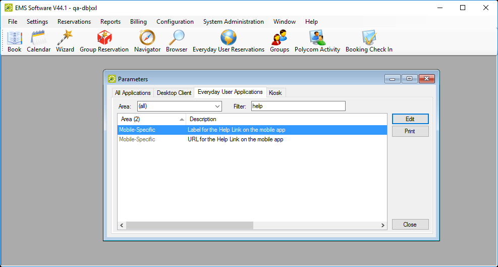

Change the Help Link Label and URL
Admins can customize both the Label for the Help Link and the URL for the Help Link on the EMS Mobile App.
This topic will provide information that will allow you to:
Change the Label for the Help Link
- Locate the Everyday User Applications parameter, Label for the Help Link on the mobile app.
- Enter a new value. See Also: EMS Mobile App Parameters.

Change the URL Help Link
- Locate the parameter, URL for the Help Link on the mobile app.
- Enter a new URL.